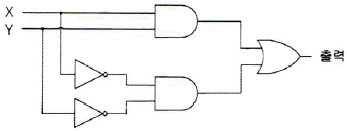
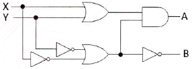
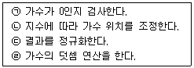
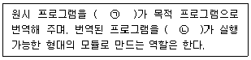
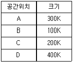

방송통신산업기사 (2016-03-05 기출문제)
1과목: 디지털 전자회로
1. 다음 중 초크코일과 콘덴서로 구성된 필터회로에서 리플률을 감소시키는 방법으로 옳은 것은?
- 인덕턴스 L을 크게 한다.
- 커패시턴스 C를 작게 한다.
- 주파수를 낮춘다.
- 부하저항 R을 작게 한다.
(정답률: 83%)

2. 다음 중 동일 규격의 다이오드를 병렬로 연결하면 회로의 특성은 어떻게 변하는가?
- 순방향 전류를 증가시킬 수 있다.
- 역전압을 크게 할 수 있다.
- 필터회로가 불필요하게 된다.
- 전원변압기를 사용하여도 항시 사용할 수 있다.
(정답률: 75%)
3. 다음 중 전력 이득이 가장 큰 접지 증폭회로는 무엇인가?
- 베이스 접지 증폭회로
- 컬렉터 접지 증폭회로
- 이미터 접지 증폭회로
- 고정 접지 증폭회로
(정답률: 70%)
4. 어떤 증폭기의 전압증폭도가 100일 때 전압이득은 몇 [dB]인가?
- 10[dB]
- 20[dB]
- 30[dB]
- 40[dB]
(정답률: 60%)
5. 송신기의 완충증폭기(Buffer Amp)에 많이 쓰이는 증폭 방식은?
- A급
- B급
- C급
- D급
(정답률: 85%)
6. 다음 중 B급 푸시풀(Push-Pull) 전력증폭기의 장점에 대한 설명으로 옳은 것은?
- 출력효율이 높고, 일그러짐이 적다.
- 높은 주파수를 증폭하는데 적당하다.
- 전압이득을 크게 할 수 있다.
- 전도지연 특성이 개선된다.
(정답률: 66%)
7. 다음 중 발진조건으로 적합한 것은?
- 궤환루프의 위상지연이 90°이다.
- 궤환루프의 전압이득이 0이고, 위상지연이 180°이다.
- 궤환루프의 전압이득의 크기가 1이고, 위상지연이 0°이다.
- 궤환루프의 전압이득이 1보다 작고, 위상지연이 90°이다.
(정답률: 63%)
8. 수정 발진회로에서 직렬 공진 주파수를 fs, 병렬 공진 주파수를 fp라 할 때 수정 발진회로가 안정된 동작을 하기 위한 동작 주파수 조건은?
- fs보다 낮게 한다.
- fs보다 높게 한다.
- fp보다 낮게, fs보다 낮게 한다.
- fp보다 높게, fs보다 낮게 한다.
(정답률: 77%)
9. 다음 디지털 변조방식 중 오류확률이 가장 낮은 것은?
- 4진 QAM
- 4진 FSK
- 4진 DPSK
- 4진 PSK
(정답률: 86%)
10. 다음 중 디지털 변조(불연속 레벨변조) 방식에 해당하는 것은?
- 펄스진폭변조(PAM)
- 펄스폭변조(PWM)
- 펄스위치변조(PPM)
- 펄스부호변조(PCM)
(정답률: 67%)
11. 다음 중 반송파의 위상과 진폭을 상호 직교하며 신호를 혼합하는 변조 방식은?
- ASK
- FSK
- PSK
- QAM
(정답률: 96%)
12. 다음 중 외부로부터 트리거(Trigger) 신호 없이 스스로 준안정 상태에서 다른 준안정 상태로 변화를 되풀이 하는 것은?
- 비안정 멀티바이브레이터
- 쌍안정 멀티바이브레이터
- 단안정 멀티바이브레이터
- 슈미트 트리거
(정답률: 89%)
13. 다음 중 클램핑(Clamping) 회로에 대한 설명으로 옳은 것은?
- 반파 정류 회로이다.
- 입력 파형의 일정 값 이하만 나타난다.
- 일정한 값 사이에만 출력으로 나타난다.
- 입력 파형의 모양은 그대로 유지하면서 파형의 평균 레벨을 수직으로 변화시킨다.
(정답률: 79%)
14. 10진수 45를 2진수로 변환한 값으로 맞는 것은?
- (101100)2
- (101101)2
- (101110)2
- (101111)2
(정답률: 86%)
15. 3초과 코드 0111의 10진수 값과 그레이 코드(Gray Code) 0111의 10진수 값을 각각 나열한 것은?
- 4, 5
- 5, 6
- 6, 7
- 7, 8
(정답률: 60%)
16. 다음 논리회로에서 입력 X는 0, Y는 1일 때 출력값 및 논리회로와 등가인 논리레이트(Logic Gate)를 표현한 것으로 옳은 것은?

- 1, NOR 게이트
- 0, XNOR 게이트
- 0, NAND 게이트
- 1, XOR 게이트
(정답률: 63%)
17. JK플립플롭(Flip-Flop)이 정상적으로 동작할 때, 두 입력 J와 K값이 1이고, 클럭(Clock)이 인가될 경우 출력 상태는?
- Set
- Reset
- Toggle
- 동작불능
(정답률: 90%)
18. 다음 중 레지스터(Register)의 기능으로 맞는 것은?
- 펄스 신호의 발생
- 데이터의 일시 저장
- 인터럽트(Interrupt) 제어
- 클럽(Clock) 회로의 동기
(정답률: 92%)
19. 다음 그림과 같은 논리회로는 어떤 기능을 수행하는가?

- 일치회로
- 반가산기
- 전가산기
- 반감산기
(정답률: 91%)
20. 3개의 입력 A, B, C 중 2개 이상이 1일 때 출력 Y가 1이 되는 다수결 회로의 논리식으로 맞는 것은?
- Y = AB + BC + AC
- Y = A × B × C
- Y = A B C
- Y = A + B + C
(정답률: 89%)
2과목: 방송통신 기기
21. VU메터는 보통 전단에 감쇠기를 넣어 1.2[V]의 입력으로 몇 [dBm]을 지시하도록 되어 있는가?
- -8[dBm]
- +8[dBm]
- +4[dBm]
- -4[dBm]
(정답률: 67%)
22. 다음 중 통신 위성을 중계기로 이용하는 TV 뉴스 취재 시스템은?
- ENG
- CG
- SNG
- EPG
(정답률: 85%)
23. 다음 중 초단파(VHF)에 대한 설명으로 옳지 않은 것은?
- 파장이 1[m]~10[m] 정도이다.
- 간섭성과 회절성이 존재한다.
- 전리층에서 반사되므로 대륙간 원거리 통신에 적합하다.
- 극초단파와 더불어 방송과 각종 통신에 가장 많이 이용되고 있다.
(정답률: 83%)
24. 진폭이 10[V], 주파수가 939[kHz]인 반송파를 주파수가 1,000[Hz], 진폭이 5[V]인 변조파신호로 진폭변조하였다. 변조율은 얼마인가?
- 25[%]
- 50[%]
- 75[%]
- 100[%]
(정답률: 67%)
25. 다음 중 주파수에 의한 방송의 분류에 해당하지 않는 것은?
- 라디오방송
- 단파방송
- 초단파방송
- 극초단파방송
(정답률: 91%)
26. 다음 중 AM스테레오 방식이 아닌 것은?
- 칸(Kahn) 방식
- 2캐리어 방식
- 해리스(Harris) 방식
- 벨러(Belar) 방식
(정답률: 75%)
27. 다음 중 간접주파수 변조방식의 변조기 구성 순서로 맞는 것은?
- 변조신호 → 적분기 → FM 변조기 → 주파수 체배기 → BPF
- 변조신호 → 적분기 → PM 변조기 → 주파수 체배기 → BPF
- 변조신호 → FM 변조기 → 주파수 체배기 → BPF
- 변조신호 → 미분기 → PM 변조기 → 주파수 체배기 → BPF
(정답률: 83%)
28. 다음 중 VTR 출력신호의 시간축 변동을 보정하는 것은?
- TBC
- Frame
- Metrix
- Encoder
(정답률: 78%)
29. 다음 중 텔레비전 방송신호 변조에 대한 설명으로 옳은 것은?
- 영상신호는 진폭변보(M)가 되고 음신호는 주파수변조(FM)가 된다.
- 영상신호가 주파수변조(FM)가 되고 음성신호는 진폭변보(AM)가 된다.
- 영상신호와 음성신호 모두 진폭변조(AM)가 된다.
- 영상신호와 음성신호 모두 주파수변조(FM)가 된다.
(정답률: 89%)
30. M/W 중계방식 중 헤테로다인 중계방식에 대한 설명으로 틀린 것은?
- 장거리 중계에 용이하다.
- 변복조를 반복하지 않으므로 변복조에 의한 특성의 열화가 적다.
- 중간주파수를 동일하게 하면 주파수가 다른 무선회선 사이의 상호접속이 가능하다.
- 기저대역 신호증폭에서 잡음이 증가한다.
(정답률: 48%)
31. 다음 중 국내 케이블 TV의 데이터방송 전송규격은?
- DASE
- MHP
- ACAP
- OCAP
(정답률: 84%)
32. 다음 중 CATV 가입자 단말기(Set-top Box)의 기능이 아닌 것은?
- 주파수변조(FM) 기능
- 디스크램블(Descramble) 기능
- OSD(On Screen Display) 기능
- 데이터통신 기능
(정답률: 84%)
33. 특성 임피던스 Zo=50[Ω]의 선로에 부하 저항으로 75[Ω]을 연결한 경우 정재파비(VSWR) 값은 얼마인가?
- 0.2
- 0.4
- 1
- 1.5
(정답률: 93%)
34. 다음의 위성 시스템에 대한 설명 중 방송위성과 거리가 먼 것은?
- 저출력으로 특정지역을 대상으로 고품질 다채널을 전송한다.
- 대출력으로 불특정지역을 대상으로 다수에게 전송한다.
- 지상파 방송에 비해 넓은 지역을 대상으로 전송한다.
- 방송위성용 수신안테나의 크기가 통신위성용보다 작다.
(정답률: 65%)
35. 다음 중 방송의 녹음 및 송출 과정에서 음(Audio)의 감시 및 체크에 사용되지 않는 기기는?
- 벡터스코프(Vectorscope)
- VU(Volume Unit) 메터
- 피크(Peak) 메터
- 스피커 장치
(정답률: 87%)
36. 다음 중 직접위성방송에서 영상과 음성신호가 합성되어 송출시 이 신호의 변조방식은 무엇인가?
- QPSK
- FM
- PCM
- QAM
(정답률: 45%)
37. 다음 중 웨이브폼 모니터와 조합하여 영상 색신호 특성을 측정하는 계측기로써 가장 밀접한 것은?
- 발진기
- 벡터스코프
- 스펙트럼 아날라이져
- 영상소인 발생기
(정답률: 75%)
38. 다음 중 벡터스코프(Vectorscope) 모니터의 Burst 신호(0도)를 기준으로 시계방향 90도에서 180도 사이에 나타나는 색상은?
- Yellow
- Green
- Cyan
- Magenta
(정답률: 89%)
39. 다음 중 ATSC 디지털 TV 방식에서 PSIP의 스트림 구조와 가장 관계가 없는 것은?
- System Time Table(STT)
- Master Guide Table(MGT)
- Virtual Channel Table(VCT)
- Broadcasting Website Service(BWS)
(정답률: 76%)
40. AM 송신기의 출력이 10[W]인 경우 이를 [dBm]으로 표시하면?
- 10[dBm]
- 30[dBm]
- 40[dBm]
- 50[dBm]
(정답률: 78%)
3과목: 방송미디어 개론
41. 다음 중 인간의 가청 주파수의 범위는?
- 20[Hz]~20[kHz]
- 300[Hz]~200[kHz]
- 2[Hz]~2,000[Hz]
- 30[Hz]~20,000[kHz]
(정답률: 85%)
42. 다음 중 방송의 기능으로 가장 대표적인 특성은 무엇인가?
- 공공성
- 오락성
- 정보성
- 속보성
(정답률: 78%)
43. FM(초단파)방송의 방송주파수 대역은 88~108[MHz]이며, 주파수 대역폭이 200[kHz]이다. 최대 가능한 채널수는?
- 80
- 90
- 100
- 110
(정답률: 89%)
44. 다음 중 가청 주파수 대역에 모든 주파수 성분이 일정한 크기로 분포하는 신호로 음향 측정에 사용되는 것은?
- Single Tone
- White Noise
- Harmonic
- Consonance
(정답률: 92%)
45. 150[MHz]인 반송파를 20[kHz]의 정현파로 FM 변조한 경우 주파수 편이가 f=1[kHz]일 때 신호의 변조지수, 대역폭으로 옳은 것은?
- βf = 0.⑤, BW = 40[kHz]
- βf = 0.1, BW = 20[kHz]
- βf = 0.2, BW = 40[kHz]
- βf = 0.3, BW = 20[kHz]
(정답률: 88%)
46. TV 수상기의 해상력이 800라인일 때 이를 주파수로 표시하면 얼마인가?
- 4[MHz]
- 8[MHz]
- 10[MHz]
- 12[MHz]
(정답률: 57%)
47. 다음 중 TV Composite 영상 신호와 가장 관계없는 것은?
- H Sync
- V Sync
- I, Q Signal
- Protocol
(정답률: 79%)
48. 다음 중 내용의 해설 및 다큐멘터리 형식의 프로그램이나 드라마 줄거리 내용을 말로 설명하는 해설은 무엇인가?
- 더빙
- 이벤트
- 리허설
- 나레이션
(정답률: 87%)
49. 지상파 DTV 방송신호를 복조하여 TS(Transport Stream)를 1시간 동안 저장하면 총 데이터의 크기는 얼마인가? (단, DTV의 전송률은 20[Mbps]로 가정한다.)
- 9[Gbyte]
- 18[Gbyte]
- 36[Gbyte]
- 72[Gbyte]
(정답률: 53%)
50. 다음 중 인터넷 메일을 보낼 때 사용하는 프로토콜이나 규칙의 집합을 의미하는 것은?
- URL
- SGML
- FTP
- SMTP
(정답률: 78%)
51. 일반적인 TV 수신 안테나 길이와 수신주파수 파장과의 관계는?
- 수신주파수 파장의 2배 길이
- 수신주파수 파장의 0.5배 길이
- 수신주파수 파장의 1배 길이
- 수신주파수 파장의 0.25배 길이
(정답률: 79%)
52. 다음 중 인터넷 방송에서 이용하는 음향 파일이 아닌 것은?
- ATRAC
- MP3
- WAV
- AVI
(정답률: 78%)
53. 다음 중 위성수신 안테나로 쌍곡면 반사면을 이용하여 두 번 반사로 초점에 모아주는 방식의 안테나는?
- 파라볼라
- 카세그레인
- 평면 안테나
- 전자 나팔
(정답률: 81%)
54. 다음 중 SCA(Subsidiary Communication Authorizations)에 대한 설명으로 부적절한 것은?
- FM 라디오 방송에 적용이 가능하다.
- AM 라디오 방송에도 적용이 가능하다.
- FM 라디오의 경우 중심주파수로 67[kHz]의 사용이 가능하다.
- 보조의 음성 방송서비스를 제공하는데 이용된다.
(정답률: 39%)
55. 다음 중 VHF 주파수대의 전파특징에 맞지 않는 것은?
- 직진한다.
- 회절특성이 있다.
- 지표면에서 반사한다.
- 전리층에서 반사한다.
(정답률: 58%)
56. SCRAMBLE은 주로 어떤 목적으로 사용하는가?
- FM 방송에서 음질을 향상시키기 위함
- AM 방송에서 음질을 향상시키기 위함
- TV 방송에서 화질을 향상시키기 위함
- 방송 시청을 방해하거나 유료채널을 만들기 위함
(정답률: 85%)
57. 다음 중 CATV 시스템에서 디지털 데이터를 RF대로 변조하여 전송로로 송신 및 전송로의 RF 신호를 복조하여 디지털 신호로 수신하는 장치는?
- A/D 변환기
- MODEM
- 디스크램블
- 직렬 유니트
(정답률: 91%)
58. 다음 중 미디어의 분류가 아닌 것은?
- 제작 미디어
- 표현 미디어
- 저장 미디어
- 제시 미디어
(정답률: 70%)
59. 다음 중 디지털 광통신 방식에서 레이저 광선의 변조를 위해 현재 주로 사용되는 변조 방식은?
- IM(Intensive Modulation)
- FSK(Frequency Shift Keying)
- WDM(Wavelength Division Multiplexing)
- FM(Frequency Modulation)
(정답률: 90%)
60. 다음 중 광케이블 포설시 CATV 시스템의 용도로 바람직하지 않은 것은?
- 품질 개선을 통한 고품질 서비스를 제공한다.
- 산업현장의 감시용 시스템(CCTV 등)으로 사용하는데 적합하다.
- 쌍방향의 서비스를 효과적으로 도입할 수 있다.
- B-ISDN으로 발전해 나가는데 매우 적절한 시스템이다.
(정답률: 80%)
4과목: 전자계산기 일반 및 방송설비기준
61. 중앙처리장치가 기억장치 혹은 I/O 장치와의 사이에 데이터를 전송하기 위한 신호선들의 집합을 무엇이라 하는가?
- 신호 버스(Signal Bus)
- 주소 버스(Address Bus)
- 데이터 버스(Data Bus)
- 제어 버스(Control Bus)
(정답률: 77%)
62. 데이터에 대한 요구가 발생된 시점부터 데이터의 전달이 완료되기까지의 시간을 무엇이라고 하는가?
- Idle Time
- Seek Time
- Search Time
- Access Time
(정답률: 75%)
63. BCD(Binary Coded Decimal)로 나타낸 0101 1001 0111 1001 0011 0100 0110를 10진수로 표현하면?
- 5979346
- 5978346
- 5977346
- 5989346
(정답률: 82%)
64. 다음은 부동소수점 수의 덧셈 알고리즘이다. 순서가 올바르게 나열된 것은?

- ㉠ -㉡ -㉣ -㉢
- ㉢ -㉣ -㉡ -㉠
- ㉣ -㉠ -㉡ -㉢
- ㉡ -㉠ -㉣ -㉢
(정답률: 80%)
65. 다음 괄호 안에 들어갈 용어로 옳은 것은?

- ㉠: 컴파일러, ㉡: 어셈블러
- ㉠: 링커, ㉡: 컴파일러
- ㉠: 컴파일러, ㉡: 링커
- ㉠: 링커, ㉡: 어셈블러
(정답률: 79%)
66. 현재 메모리의 분할 상태가 다음과 같을 때, 크기가 100K인 작업을 최초적합(First Fit) 기법으로 할당한다면 어느 위치에 적재되는가?

- A
- B
- C
- D
(정답률: 75%)
67. 다음 중 소프트웨어가 가지는 특성이라 할 수 없는 것은?
- 가시성(Visibilidy)
- 복잡성(Complexity)
- 변경가능성(Changeability)
- 복제성(Duplicability)
(정답률: 68%)
68. 스캐너를 이용하여 읽어진 이미지 형태의 문서를 이미지 분석 과정을 통하여 문자 형태의 문서로 바꾸어 주는 프로그램은 무엇인가?
- OMR(Optical Mark Reader)
- Retouching
- OCR(Optical Character Reader)
- 이미지 편집
(정답률: 73%)
69. 다음 중 연산자(OP Code) 기능과 관련 없는 것은?
- 함수 연산 기능
- 입출력 기능
- 제어 기능
- 주소 지정 기능
(정답률: 74%)
70. 다음 중 CPU가 정기적으로 I/O 장치에서 요구되는 서비스 요청이 있는지 확인하는 기법은?
- 인터럽트(Interrupt)
- 버퍼링(Buffering)
- 폴링(Polling)
- 스풀링(Spooling)
(정답률: 77%)
71. 방송채널사용사업자가 승인유효기간 만료 후 계속 방송을 행하고자 할 때 다음 중 어떤 절차를 받아야 하는가?
- 미래창조과학부장관 또는 방송통신위원회의 재허가
- 미래창조과학부장관 또는 방송통신위원회의 재등록
- 미래창조과학부장관 또는 방송통신위원회의 재허가 추천
- 미래창조과학부장관 또는 방송통신위원회의 재승인
(정답률: 88%)
72. 종합편성 또는 보도전문편성을 행하는 방송사업자는 당해 방송사업자의 방송운영과 방송프로그램에 관한 시청자의 의견을 수렴하여 주당 몇 분 이상의 시청자 평가프로그램을 편성하여야 하는가?
- 30분
- 60분
- 90분
- 120분
(정답률: 90%)
73. 다음 중 533[kHz] 초과, 1,606,5[kHz] 이하 방송국의 주파수허용편차는?
- 10[Hz]
- 15[Hz]
- 20[Hz]
- 25[Hz]
(정답률: 50%)
74. 다음 중 중계유선방송에서 영상방송파의 신호레벨의 기준 단위는?
- [dBpV]
- [dBnV]
- [dBμV]
- [dBmV]
(정답률: 80%)
75. 종합유선방송에 사용하는 동축케이블에서 절연저항은 1[km]당 몇 [MΩ] 이상이어야 하는가?
- 10[MΩ/km] 이상
- 100[MΩ/km] 이상
- 500[MΩ/km] 이상
- 1,000[MΩ/km] 이상
(정답률: 75%)
76. 다음 중 종합유선방송국설비에 접속하는 전송선로설비가 무선방식인 경우 주파수변조 방식의 분계점 기준에 알맞은 것은?
- 주파수 변조기와 무선 송신기의 최초 접속점
- 진폭 변조기와 무선 송신기의 최초 접속점
- 펄스 변조기와 무선 송신기의 최초 접속점
- 혼합 변조기와 무선 송신기의 최초 접속점
(정답률: 90%)
77. 다음 중 방송 공동시청 안테나 시설에서 증폭기의 기준에 적합하지 않는 것은?
- 지상파텔레비전방송, 위성방송 및 에프엠라디오 방송의 신호를 균일하게 증폭할 수 있을 것
- 케이블 또는 별도의 전력선으로부터 전원을 공급받을 수 있을 것
- 자동으로 출력신호의 세기를 조정할 수 있을 것
- 공급되는 전원을 수동으로 연결하거나 차단할 수 있을 것
(정답률: 77%)
78. 다음 중 방송 공동시청 안테나 시설에 사용되는 설비가 아닌 것은?
- 증폭기
- 수신안테나
- 송신안테나
- 보호기
(정답률: 74%)
79. 다음 중 정보통신공사의 하자담보책임에서 대통령령이 정하는 기간이 3녀에 해당하는 공사가 아닌 것은?
- 철탑공사
- 전송설비공사
- 위성통신설비공사
- 통신구공사
(정답률: 79%)
80. 다음 중 방송국 검사의 종류가 아닌 것은?
- 수시검사
- 준공검사
- 임시검사
- 정기검사
(정답률: 84%)